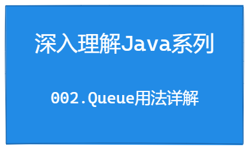

深入理解Java系列 | Queue用法详解
Hi 大家好，我是「 毛与帆 」，一个热爱技术的后端工程师，感谢你的关注！

从今天开始我将会带来深入理解Java系列文章，主要目的是重温Java中的基础概念、数据结构、多线程、锁、JUC等重点知识点。本文我们一起来研究下Java中Queue的用法。
1. 什么是Queue？
Queue也就是队列，是一种基本的线性数据结构，与之类似的其他数据结构还有数组、链表、栈等。
Queue是一种遵循先进先出（FIFO: First In, First Out）原则的数据集合，数据在Queue中的流动是单向的，从队尾流向队首。
如下图所示，元素的插入发生在队尾，删除发生在队首；通常一个元素从队首中取出后，该元素从Queue中删除；非队首的元素，无法直接对其进行读取。

在现实世界中队列非常常见，比如排队等待购票、上车的乘客，流水线上一个个等待处理的产品，都是一种队列模型；而且程序设计的世界中队列使用也非常广泛：比如多线程中等待处理的任务、排队等待获取某个锁的线程等。
下面我们一起来看下Java中Queue的主要用法和原理吧。
2. Java中的Queue接口
2.1 Queue接口定义
在Java中，队列是一种基本的集合类型，提供了队列接口Queue，定义在 其中java.util包中；其中Queue接口继承了基础集合接口Collection。
Queue接口定义如下：
public interface Queue<E> extends Collection<E> {
boolean add(E e);
boolean offer(E e);
E remove();
E poll();
E element();
E peek();
}在Queue接口中，定义基本的元素插入和删除的方法，主要方法及其含义分别如下：
| 方法 | 说明 |
|---|---|
boolean add(E e) |
向队列中添加一个元素；如果有空间则添加成功返回true，否则则抛出IllegalStateException异常 |
boolean offer(E e) |
向队列中添加一个元素；如果有空间则添加成功返回true，否则返回false |
E remove() |
从队列中删除一个元素；如果元素存在则返回队首元素，否则抛出NoSuchElementException异常 |
E poll(); |
从队列中删除一个元素；如果元素存在则返回队首元素，否则返回null |
E element() |
从队列获取一个元素，但是不删除；如果元素存在则返回队首元素，否则抛出NoSuchElementException异常 |
E peek() |
从队列获取一个元素，但是不删除；如果元素存在则返回队首元素，否则返回null |
2.2 双端队列：Deque接口
在上面的Queue接口定义中，实现了最基本的元素插入和删除方法，也就是从队尾进行元素插入，在队首进行元素删除；而Java还提供了另一个功能强大的Deque接口，实现了双端队列的功能。
什么是双端队列？
双端队列就是可以支持在队首或者队尾，都可以进行元素的插入和删除操作的队列，如下图所示。在双端队列中，分别使用first和last表示队列的首、尾两端，而在插入或删除元素时，可以通过指定在队列的哪一端进行操作。
比如：offerFirst(A)表示在队首进行元素的插入，pollLast()表示在队尾进行元素的删除。

Deque接口的定义如下：
可以看到，Deque接口继承了Queue接口，除了基本的Queue接口的方法外，Deque还提供了双端队列的操作方法，如代码所示，每个操作方法与Queue的操作方法类似，只是指定了在队首还是队尾进行元素操作。
public interface Deque<E> extends Queue<E> {
// 向队首添加一个元素；如果有空间则添加成功返回true，否则则抛出`IllegalStateException`异常
void addFirst(E e);
// 向队尾添加一个元素；如果有空间则添加成功返回true，否则则抛出`IllegalStateException`异常
void addLast(E e);
// 向队首添加一个元素；如果有空间则添加成功返回true，否则返回false
boolean offerFirst(E e);
// 向队尾添加一个元素；如果有空间则添加成功返回true，否则返回false
boolean offerLast(E e);
// 从队首删除一个元素；如果元素存在则返回队首元素，否则抛出`NoSuchElementException`异常
E removeFirst();
// 从队尾删除一个元素；如果元素存在则返回队尾元素，否则抛出`NoSuchElementException`异常
E removeLast();
// 从队首删除一个元素；如果元素存在则返回队首元素，否则返回null
E pollFirst();
// 从队尾删除一个元素；如果元素存在则返回队首元素，否则返回null
E pollLast();
// 从队首获取一个元素，但是不删除；如果元素存在则返回队首元素，否则抛出`NoSuchElementException`异常
E getFirst();
// 从队尾获取一个元素，但是不删除；如果元素存在则返回队尾元素，否则抛出`NoSuchElementException`异常
E getLast();
// 从队首获取一个元素，但是不删除；如果元素存在则返回队首元素，否则返回null
E peekFirst();
// 从队尾获取一个元素，但是不删除；如果元素存在则返回队尾元素，否则返回null
E peekLast();
// 如果元素o存在，则从队列中删除第一次出现的该元素
boolean removeFirstOccurrence(Object o);
// 如果元素o存在，则从队列中删除最后一次出现的该元素
boolean removeLastOccurrence(Object o);
// 其他方法省略....
}2.3 实现类 LinkedList
在前面，我们了解了Java中定义的两个队列接口Queue和Deque，而两个接口的实现类是通过LinkedList来实现的。从类名定义上可以看出来，LinkedList其实是基于链表实现的List的一个数据集合，而且LinkedList还实现了Queue接口和Deque接口。我们可以直接使用LinkedList来实现队列的操作。下面是其定义：
public class LinkedList<E>
extends AbstractSequentialList<E>
implements List<E>, Deque<E>, Cloneable, java.io.Serializable
{...}下面是一个基于LinkedList实现的双端队列的例子：
public static void main(String[] args) {
Deque<String> queue = new LinkedList<>();
// 元素入队
queue.offer("1");
queue.offer("2");
queue.offer("3");
queue.offerFirst("0"); // 队首添加元素0
queue.offerLast("4"); // 队尾添加元素4
System.out.println(queue); // 此时队列中的元素为：[0, 1, 2, 3, 4]
// 元素出队
System.out.println(queue.poll()); // 删除队首元素，打印值：0
System.out.println(queue.pollFirst()); // 删除队首元素，打印值：1
System.out.println(queue.pollLast()); // 删除队尾元素，打印值：4
}OK，到这儿我们已经了解了队列接口的定义以及实现类LinkedList的定义以及使用方法，下面我们简单看下LinkedList底层是如何实现的队列功能。
3. LinkedList如何实现队列功能
3.1 链表的定义
上面我们了解到，LinkedList其实是基于链表实现的一个数据集合，并实现了队列的接口功能。我们再来看下LinkedList的定义和成员变量。
public class LinkedList<E>
extends AbstractSequentialList<E>
implements List<E>, Deque<E>, Cloneable, java.io.Serializable
{
// 元素数量
transient int size = 0;
// 队首元素节点
transient Node<E> first;
// 队尾元素节点
transient Node<E> last;
// ......
}可以看到，在LinkedList中有两个成员变量first和last，类型为Node<E>，分别表示队列中队首和队尾的节点，其实也就是链表中的首尾节点。Node<E>是链表的一个节点，下面是其定义：
private static class Node<E> {
// 元素值
E item;
// 后一个节点
Node<E> next;
// 前一个节点
Node<E> prev;
Node(Node<E> prev, E element, Node<E> next) {
this.item = element;
this.next = next;
this.prev = prev;
}
}在Node<E>中，成员变量item用来存储具体的元素值，另外两个Node<E>类型的变量next和prev分别表示该节点的后一个节点和上一个节点。
到此，我们就可以知道，LinkedList其实是由一个双向链表构成，并通过first和last分别表示链表的首尾节点。然后我们可以画出下面这个链表的示意图。

3.2 元素的插入
在前面的介绍中，我们知道，元素的插入可以使用add和offer两个方法，不同的是当队列容量不足时，add方法会抛除异常，而offer方法会返回false。但是LinkedList是基于双向链表实现，理论上该链表是无界的，只要程序内存允许，可以一直插入新的元素。
下面我们看下offer方法插入元素的实现逻辑，代码如下（已添加相关注释）：
public class LinkedList<E> .....{
/**
* 插入元素
*/
public boolean offer(E e) {
// 此处直接调用了add方法
return add(e);
}
/**
* 插入元素
*/
public boolean add(E e) {
// 调用linkLast方法
linkLast(e);
return true;
}
/**
* 在链表尾部，添加一个新元素，并作为新的last节点
*/
void linkLast(E e) {
// 当前last节点
final Node<E> l = last;
// 创建新节点，prev节点指向当前last节点
final Node<E> newNode = new Node<>(l, e, null);
// 新节点作为新的last节点
last = newNode;
if (l == null)
// 如果原last节点为null，表示该链表为空，则将节点同时作为first节点
first = newNode;
else
// 链表不为空，则将新节点，作为原last节点的next节点
l.next = newNode;
// 元素数量+1
size++;
// 集合修改次数+1
modCount++;
}
}从代码中可以很容易的看出，offer方法直接调用了add方法，add方法中调用了linkLast方法，并直接返回了true，表示该元素肯定可以插入成功。具体执行元素插入的逻辑在linkLast方法中完成，通过上面代码中的注释可以看出，linkLast方法主要功能是在链表尾端添加一个新节点，具体操作示意图如下：

offerFirst和offerLast是如何实现的？
当了解了offer方法后，我们再看下offerFirst和offerLast的实现。从下面代码中可以知道，offerFirst和offerLast方法分别调用了addFirst和addLast方法，然后在addFirst和addLast方法中，又分别调用了linkFirst和linkLast方法。
linkLast方法上已经讲到，主要功能是在链表尾端添加一个新节点；而linkFirst方法，其主要功能是在链表首端添加一个新节点，具体逻辑与linkLast方法类似，本处不再赘述，可以参考下面代码中的注释。
public class LinkedList<E> .....{
// 队首插入元素
public boolean offerFirst(E e) {
addFirst(e);
return true;
}
// 队尾插入元素
public boolean offerLast(E e) {
addLast(e);
return true;
}
// 队首插入元素
public void addFirst(E e) {
linkFirst(e);
}
// 队尾插入元素
public void addLast(E e) {
linkLast(e);
}
/**
* 在链表头部，添加一个新元素，并作为新的first节点
*/
private void linkFirst(E e) {
// 当前first节点
final Node<E> f = first;
// 创建新节点，next节点指向当前first节点
final Node<E> newNode = new Node<>(null, e, f);
// 新节点作为新的first节点
first = newNode;
if (f == null)
// 如果原first节点为null，表示该链表为空，则将节点同时作为last节点
last = newNode;
else
// 链表不为空，则将新节点，作为原first节点的prev节点
f.prev = newNode;
// 元素数量+1
size++;
// 集合修改次数+1
modCount++;
}
/**
* 在链表尾部，添加一个新元素，并作为新的last节点
*/
void linkLast(E e) {
// 本处省略，详见上一代码块
}
}OK，至此我们已经了解了元素是如何插入的，并且分别介绍了双端队列中在队首和队尾插入元素的实现逻辑，下面我们再简单看下元素是如何实现删除的。
3.3 元素的删除
前面了解了元素的插入流程，我们再看删除流程就很清晰了，主要功能就是将队列头或者队尾的节点删除。删除节点的方法主要有poll和pollFirst和pollLast，以及delete、deleteFirst和deleteLast。这几个方法最终调用的都是两个链表的操作方法unlinkFirst和unlinkLast，表示删除链表头部和链表尾部的节点。
下面是unlinkFirst和unlinkLast方法的代码逻辑，此处不再赘述，可以直接看代码注释。
public class LinkedList<E> .....{
/**
* 删除链表头结点f，f不为空
*/
private E unlinkFirst(Node<E> f) {
// assert f == first && f != null;
// 获取头结点的元素
final E element = f.item;
// 获取头结点的next结点
final Node<E> next = f.next;
f.item = null;
f.next = null; // help GC
// 将next结点作为头结点
first = next;
if (next == null)
// next结点为null，表示删除完成后链表为空，则last结点置为null
last = null;
else
// 删除完成后链表非空，则当前头结点的prev结点为null
next.prev = null;
// 元素数量-1
size--;
// 集合修改次数-1
modCount++;
// 返回删除结点的元素
return element;
}
/**
* 删除链表尾结点l，l不为空
*/
private E unlinkLast(Node<E> l) {
// assert l == last && l != null;
// 获取尾结点的元素
final E element = l.item;
// 获取尾结点的prev结点
final Node<E> prev = l.prev;
l.item = null;
l.prev = null; // help GC
// 将prev结点作为尾结点
last = prev;
if (prev == null)
// prev结点为null，表示删除完成后链表为空，则first结点置为null
first = null;
else
// 删除完成后链表非空，则当前尾结点的next结点为null
prev.next = null;
// 元素数量-1
size--;
// 集合修改次数-1
modCount++;
// 返回删除结点的元素
return element;
}
}4. 总结
本文主要介绍了Java中Queue的基础用法以及相关底层原理，使用Queue我们可以实现一些任务排队处理的功能等。
但是在上面分析过程中，我们可以发现Java中Queue的实现其实是非线程安全的，如果在多线程环境下进行Queue的入队和出队操作，势必会产生不一致的情况。所以Java也提供了线程安全的队列类——阻塞队列BlockingQueue，我们下文将会对BlockingQueue进行分析。
我是「 毛与帆 」，如果本文对你有帮助，欢迎向各位小伙伴点赞、评论和关注，感谢各位老铁，我们下期见

本博客所有文章除特别声明外，均采用 CC BY-SA 4.0 协议 ，转载请注明出处！